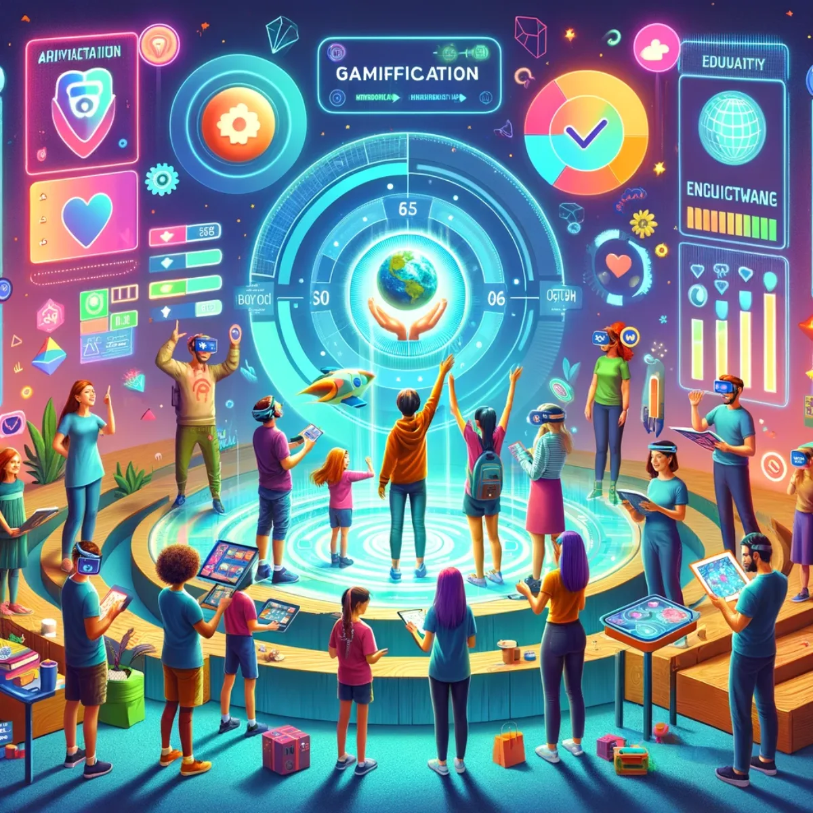

Useful AI and learning
The proposal calls this universal intelligence: access to tools and knowledge that help people understand, create and make decisions.

People need both practical help and enough money to meet their needs. This proposal brings together access to useful AI and learning with the longer-term aim of an adequate income for everyone.
An idea to explore together. Read the proposal, try the tools and follow the sources. No sign-up needed.
Public proposalThe proposal calls this universal intelligence: access to tools and knowledge that help people understand, create and make decisions.
Universal adequate income means aiming for enough income for everyone to live adequately, including through care, study and retirement.
Financial security and practical help could make it easier to choose a path, change direction or say no.
An adequate income would need to reflect real living costs and circumstances. Housing, disability, caring responsibilities, household size and location all matter. The proposal still needs a definition, a funding plan and rules about who would receive support. No payment amount or entitlement has been established.
| Design question | Why it matters |
|---|---|
| Who is included? | A universal objective includes people outside any acquired business or member network. |
| What is adequate? | The proposed benchmark needs an understandable basis and a way to reflect real circumstances. |
| How is it funded? | Trading surplus, services and other possible mechanisms are different sources, not interchangeable promises. |
| What changes over time? | Prices, needs, productive capacity and technology change; the model needs revision rather than a fixed slogan. |
| Who decides and reviews? | People affected need understandable choices, explanations and routes to challenge mistakes. |
Shared businesses could provide wages, member benefits, equipment, services and learning opportunities. Reaching everyone, including people outside those businesses, would require a much broader funding and public policy discussion.
More output is one possible result. More security, capability and freely chosen time are the questions this proposal asks of it.
The background papers propose three kinds of records: money paid and received, verified voluntary contribution, and outcomes such as better access or new skills. In the later papers, one C-Hour means one verified hour of volunteering. It has no dollar conversion and does not replace wages. Any real arrangement would still need its legal and tax treatment checked.
Source trail: D05 · Fiji-Australia Vuvale Union Submission D09 · The B.E.L.A.U. Protopian Gambit